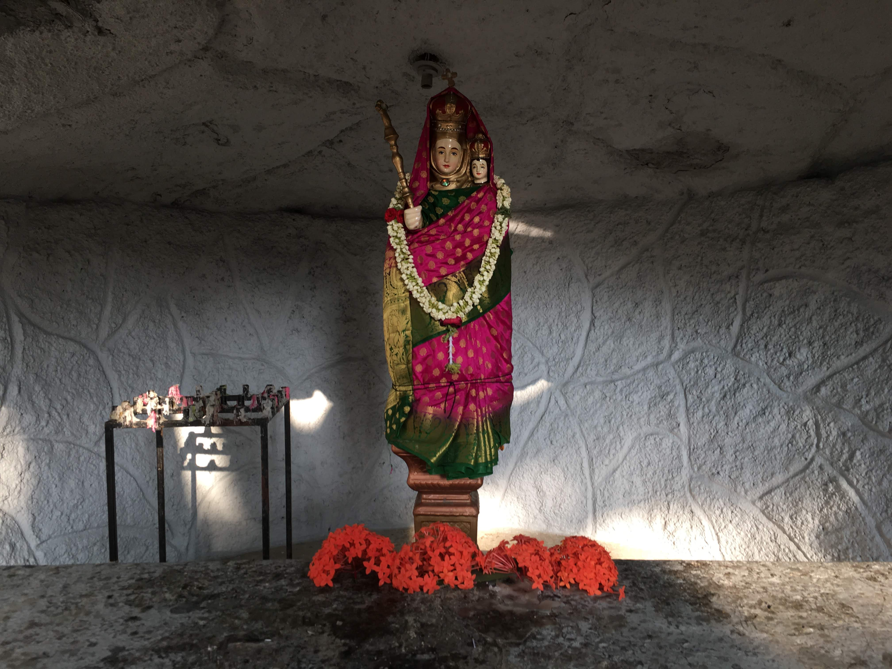
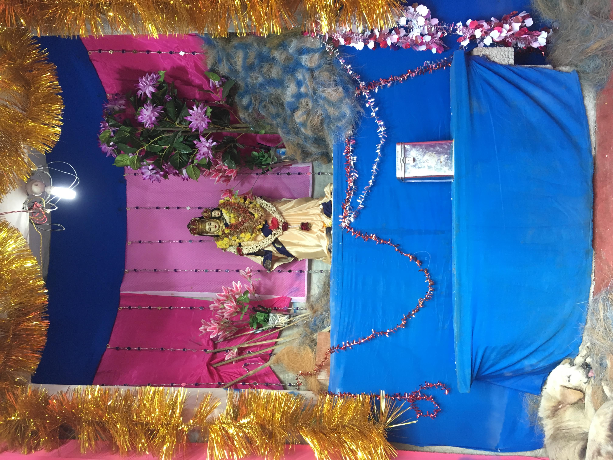
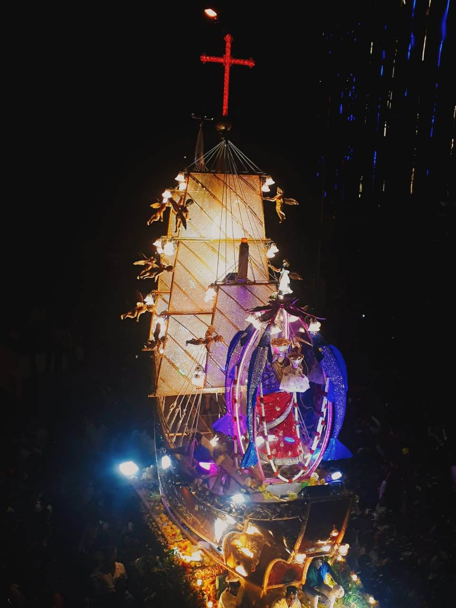
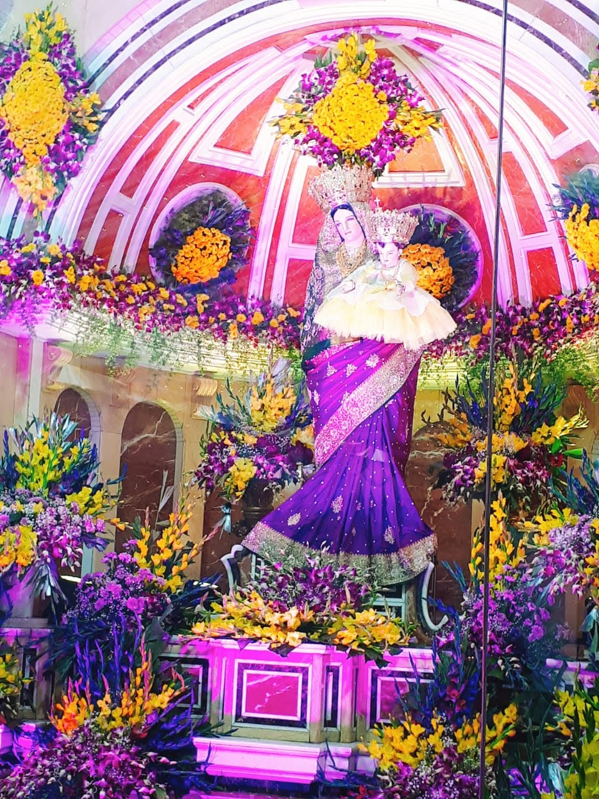
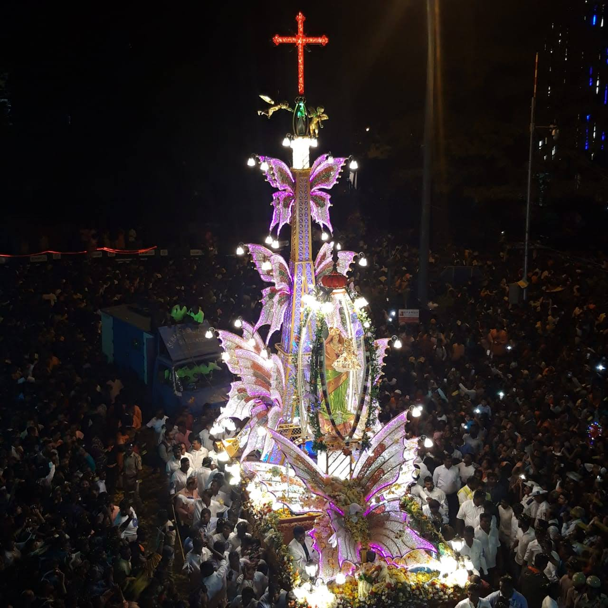
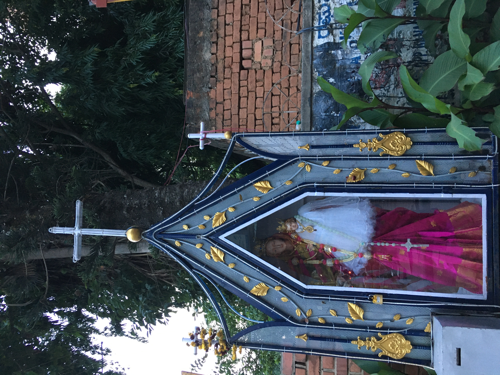
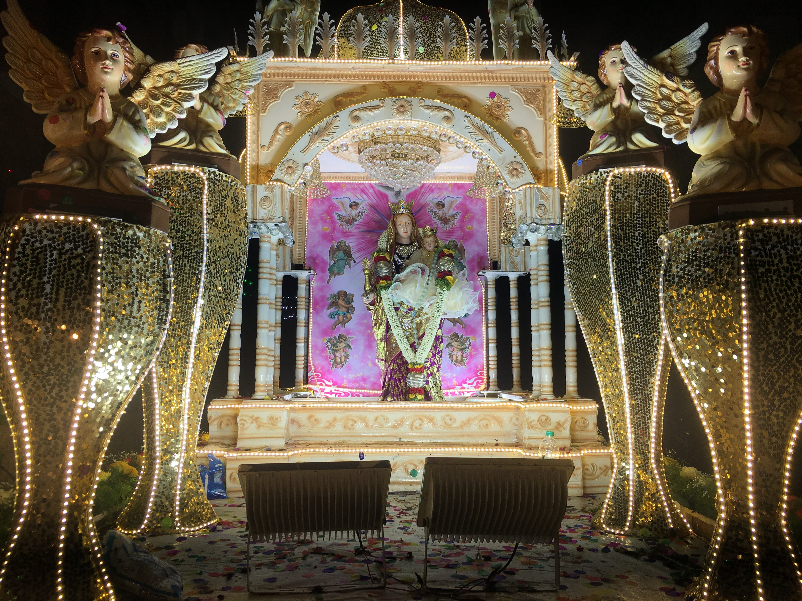
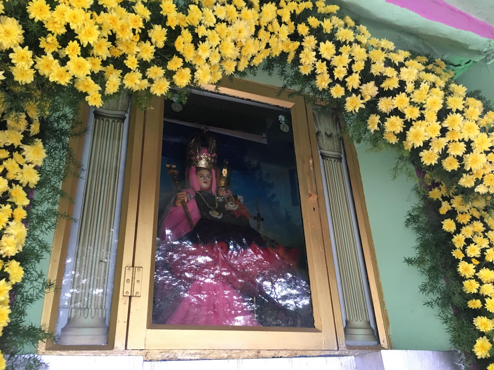
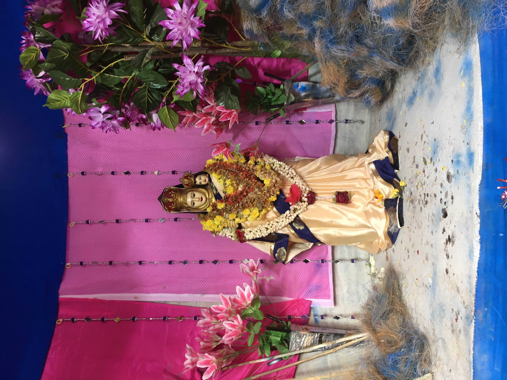
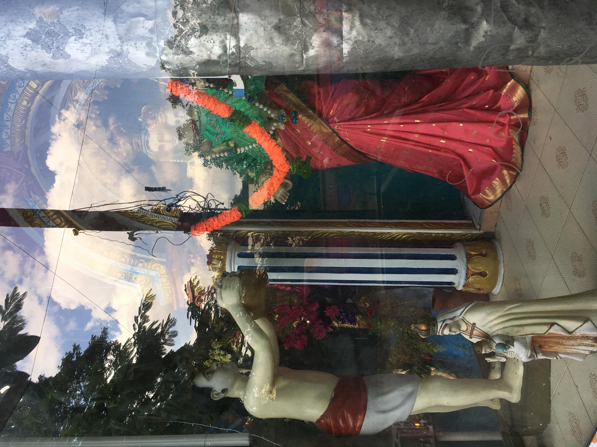

<!doctype html>
<title>Take what you need</title>
  <head>
    <!-- Required meta tags -->
    <meta charset="utf-8">
    <meta name="viewport" content="width=device-width, initial-scale=1, shrink-to-fit=no">

    <!-- Bootstrap CSS -->
    <link rel="stylesheet" href="https://stackpath.bootstrapcdn.com/bootstrap/4.3.1/css/bootstrap.min.css" integrity="sha384-ggOyR0iXCbMQv3Xipma34MD+dH/1fQ784/j6cY/iJTQUOhcWr7x9JvoRxT2MZw1T" crossorigin="anonymous">
     <!-- link CSS file-this.css -->
    <link rel="stylesheet" type="text/css" href="faith.css" />
    
    <style>
        @import url('https://fonts.googleapis.com/css2?family=Roboto+Condensed&display=swap');
        body {
            background: linear-gradient(#e9e9106e, #c82be76e);
                background-repeat:no-repeat;
               background-size:cover;
               font-family: 'Roboto', sans-serif;
        }
    </style> 

</head>

<body style="background-color:#ffffff">

</body>
    
 
<body>
       
        
        
        
        
        
        
        
        
        
        
        
	<div class="threeparts">
        <div> </div>
        <div>
		<font face="Roboto" color="black" size="4">
		Unique to Bangalore city, Mother Mary is dressed in a saree like a Hindu Goddess and Baby Jesus adornes a little girl's frock.
		These images are part of an ongoing work.
		</font>
		<br><br>
		<font face="Roboto" color="black" size="2">
		Join the others <a href="https://t.me/joinchat/pxgwLYo3nb1jMjg1">here</a> 
		<br>
            This work is created by Avril Stormy Unger and Sultana Zana in Bangalore, India. <br>© 2021 Avril Stormy Unger + Sultana Zana 
		</font>
			</div>
    	</div>
    
</body>
